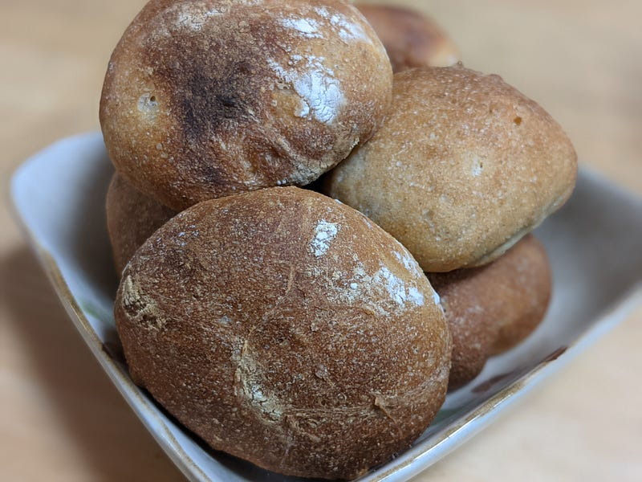
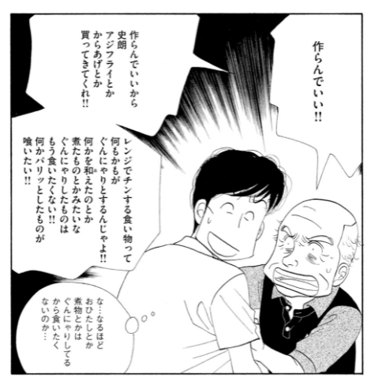
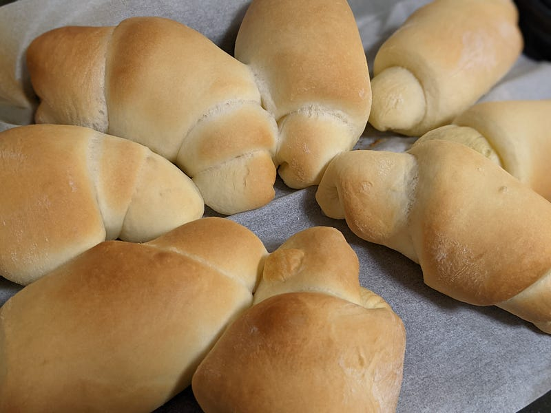
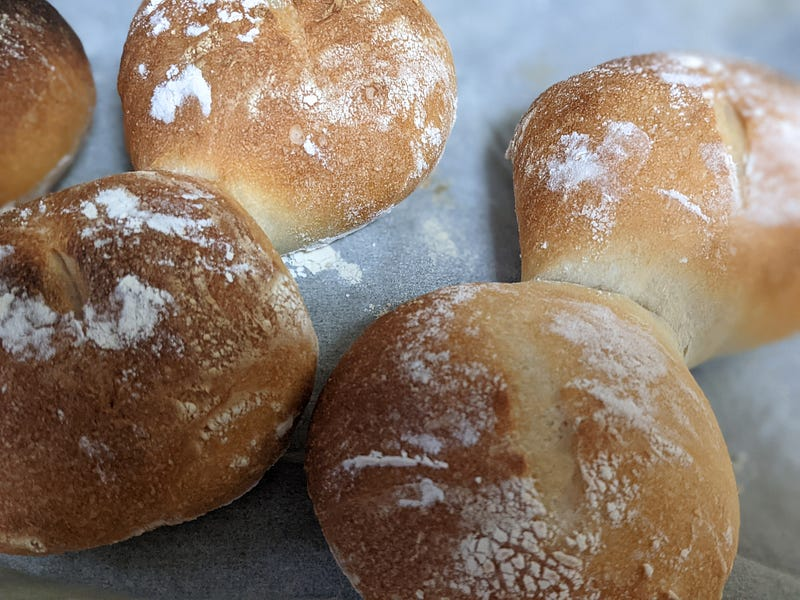
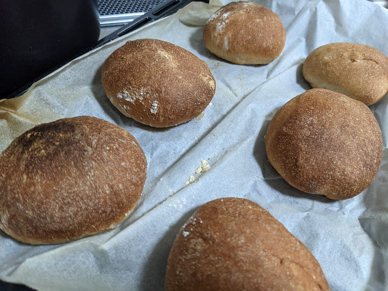

食事のお供のパンを焼く
食事のお供のパンを焼く
これまでブレッドメーカーとかを買って家でパンを焼いたりしていたが、この度「粉ものと仲良くなろう」というテーマで最近はドーナツを揚げたり、チョコレートマフィンを作ったり、パウンドケーキを作ったりしていたのだが、満を持して自分でシンプルな食事のお供のパンを焼くことにした。

なぜパンを焼くのかと言えば、なかなか日本では自分の食べたいパンに出会えないからだ。
例えば、ポンパドゥール、サンジェルマン、アンデルセンと言った大手はおかずパン、スイーツ系、そして食パンには事欠かないしおいしい。
が、これらのパンはどれもフニャフニャのいわゆるジャパニーズパンだ。これらのパンはこれはこれでうまいのだが、これを食べているといつも「きのう何食べた？」の以下の一コマを思い出す。

「おかずパンはどれもこれもぐんにゃりとするんじゃよ！バリっとしたパンが喰いたい！」
うちの妻はことあるごとにこれを聞かされていてかわいそうとは思いつつも、実際こうなのだ。わしゃかたいパンで食事をしたいんじゃ…
で、前述の日本の大手パン屋だと、ハード系のパンと言えばバゲットにチアバッタと言った、バター系のパンしかない。
厳密に言えば、時折ライ麦系のパンとかもあるし、季節ものであるパネトーネとかもある。
だが、自分が欲しいのはご飯のお供のセミハードな田舎パンなのだ。
普段づかいのビストロとかででてくる、噛み応えがあって、手触りがごつくて、でも手で割れるアレ。
ポトフに浸しておいしいアレ。ちょっと温めてバターを塗るとおいしいアレ。モルタデーラとエメンタールチーズを挟んでおいしいアレだ。
かと言って、ロブションとかメゾンカイザーまで来ると高級すぎる。違う、もっと気軽に毎日食べられるアレが欲しい！
日本のパン屋にはなかなかアレがないのだ。
ちなみに自分の観測範囲では三宿のボネダンヌが、供給の安定と味の両面でイチ押しである。この店はハード系のパンがうまいだけでなく、サンドイッチの作り方がうまい。パテドカンパーニュの絶妙な厚さ、シャンボンブールのハムとバターのバランスとか、実に素晴らしい。
あと、すぐに売り切れてしまって供給の安定という意味で良くなかったけど、味は抜群の下北沢（というには少し遠いが）のKAISOもよい。あそこのハード系はちゃんとエッジがたってうまい。
閑話休題。
ということで前置きがながかった。
で、まず作ったのがこちらのパン。
【塩パン(ザルツシュタンゲン)】の材料は、富澤商店オンラインショップ（通販）、直営店舗でご購入いただけます。また、無料のレシピも多数ご用意。確かな品質と安心価格で料理の楽しさをお届けします。tomiz.com
とりあえず富澤商店のレシピだし、と思って作ってみたら結構バターたっぷりのパンだった。ちなみに塩はスキップしたｗ

250gの強力粉に、バターが都合65g、水分は160g強。焼きは200℃13分。
これはこれでおいしくできたのだが、まだフワッとしてフニャっとしている感じ。バターの香りもいいのだが、毎日これを食べる、みたいなテーマだとつらそう、という感じだった。
そこで、もう少しハード系、ということで今度リュスティックのレシピを探してみると、当然のように富澤商店にあたるのだが、今度はこいつはモルトシロップなんて面倒くさいものを使っている。
【基本のリュスティック】の材料は、富澤商店オンラインショップ（通販）、直営店舗でご購入いただけます。また、無料のレシピも多数ご用意。確かな品質と安心価格で料理の楽しさをお届けします。tomiz.com
なので、こちらを参考にした。
リュスティックの生地は水分量が多いので生地が扱いにくく、まとまりにくいのが難点。 どちらかというと、私はリュスティクのような水分量の多いハードパン作りは苦手。でも食べるのは大好き。…www.cotta.jp
富澤商店のほうは250gの強力粉に対して水分が200g、焼きは210℃で16分。
cottaのほうは250gの強力粉に対して水分が180g、焼きは220℃で20分前後。最初の塩パンに比べるとより水分が多く、高い温度で焼き工程を行っているのがわかる。
それでできあがったのがこちら。

近い！理想に近くなった！外の生地は荒い感じで手触りがごつい。パンをちぎるときにはフワッとほどけるのでなく、やぶける感じがする。焼き時間はちなみに約16分。
バターを使っていないので香りはバターのあのむせ返る香りではなく、あくまでイーストと小麦の香りがメインだ。これならどんなメニューも立派にエスコートできる。
ちなみに写真には撮らなかったが、このパンはアクアパッツァと一緒に食べたらものすごいうまかった。まさにアクアパッツァの出汁を浸して食べるのに最適なパンだったといえる。
ここで終わってもよかったのだが、もうちょっとだけ頑張りたかったので、即座に三つ目を作った。ここまで変数としては「バターの有無」「水分量」「焼き温度」があったので、ここでもう一つ、小麦粉の割合を変えてみたかったのだ。
というわけでリュスティックの参考に使ったレシピのうち、小麦粉の配分だけ180gの強力粉に対して70gの全粒粉を入れるという点だけ変えてあとは一緒のレシピで作ったのがこちら（今回クープは入れ忘れた）。

キター！よりハードでより小麦粉の香りが強烈！カンパーニュっぽいが、あそこまででかくもないし、中身のキメももっと細かい感じ。でもどっしり、堅め。焼き上げの色もギリギリの感じを攻めててよい感じ。
こいつは本当はポトフやらコンソメに付けて食べたい感じなのだが、残念ながらそこまでお大尽ではないので我が家御用達の香薫ウィンナーと一緒に明日の朝食として食べられます。
というわけで、一旦自分の作りたかったタイプのパンの作り方はわかった。オーブンさえあれば強力粉とイースト、それに少々の塩・砂糖だけでパンを焼けるようになったので、今後はパンに噛み応えが欲しいときは積極的に自分で作っていきたいと思う。